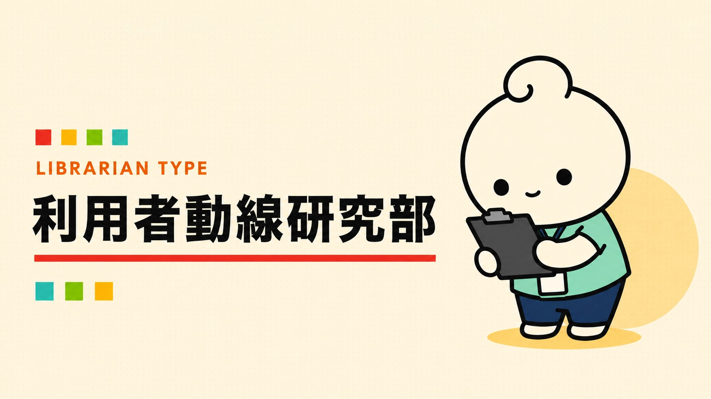
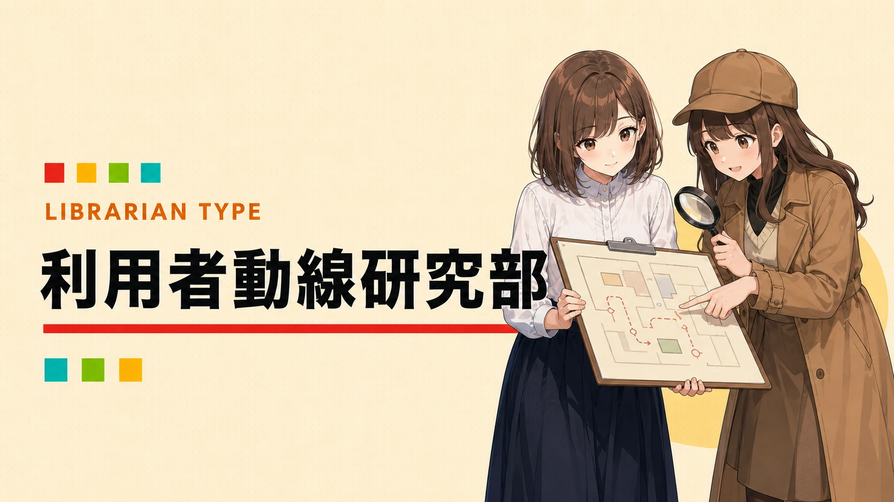

あなたの図書館員タイプは……
利用者動線研究部


その立ち止まりに、ヒントがある。
利用者がどこで迷うか、どこで立ち止まるかが気になるタイプ。図書館の「使われ方」そのものを観察しています。
こんなこと、ちょっと好きかも
- 迷いやすい場所を見つける
- 案内の前で立ち止まる時間を観察する
- レイアウトの小さな仮説
TYPE CHECK / YOUR TURN
あなたなら、どの図書館員タイプ？
YAWATOSHO GAMES / PICK 01
あなたにおすすめのYAWATOSHO GAME
GAME / 01